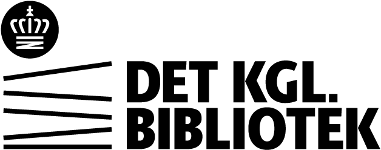

Tilføj stemmer til Thorium
Tilføj eller fjern oplæsningsstemmer, så de kan bruges i Thorium Reader.

Ikke i Thorium
I Thorium
| Navn | Leverandør | Sprog |
|---|---|---|
| Ida | Acme Voice | Dansk |
| Mads | Acme Voice | Dansk |
| Sofie | Nordic Speech | Dansk |
| Navn | Leverandør | Sprog |
|---|---|---|
| Anna | Microsoft | Dansk |
| Jakob | Nordic Speech | Dansk |